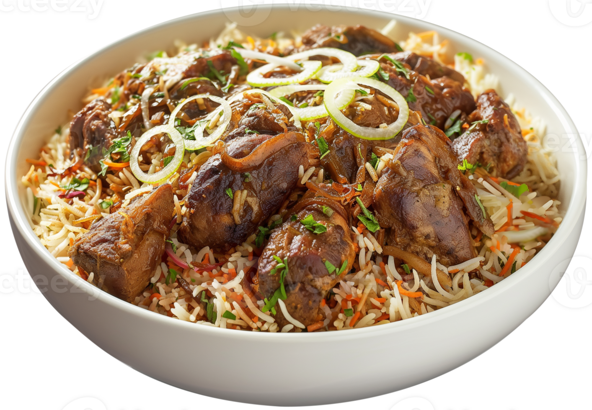

Biriyani, a spicy chicken and rice dish, is one of the most well-known Indian-Pakistani dishes.
Submitted by Nicol Zahra | Updated on June 22, 2026

Why You'll Love This Recipe
Heat olive oil in a large skillet over medium heat. Stir in yogurt and vinegar. Add onion; cook and stir until golden and tender. Add tomatoes, chile peppers, garlic, and ginger paste. Cook and stir until tomatoes are tender. Season with garam masala, mint, salt, and pepper. Stir in cilantro.
Place chicken into tomato-onion mixture in the skillet. Reduce heat to medium-low, cover, and continue cooking, stirring occasionally, until chicken is no longer pink in the center and the juices run clear, about 45 minutes. An instant-read thermometer inserted into meat should read at least 165 degrees F (74 degrees C).
Meanwhile, bring water and rice to a boil in a large pot. Mix in cinnamon stick, bay leaf, green cardamom, and black cardamom. Season with salt. Cover, reduce heat to low, and simmer until rice is tender and water is absorbed, about 20 minutes. Discard cinnamon stick, bay leaf, and cardamom.
Spread 1/2 of the cooked rice in the bottom of a large serving dish. Pour chicken mixture on top. Cover with remaining cooked rice. Sprinkle with food coloring; mix to serve.
You can find powdered yellow food coloring, f requently used in Indian dishes and generally turmeric-based, at Indian food stores or food specialty shops.